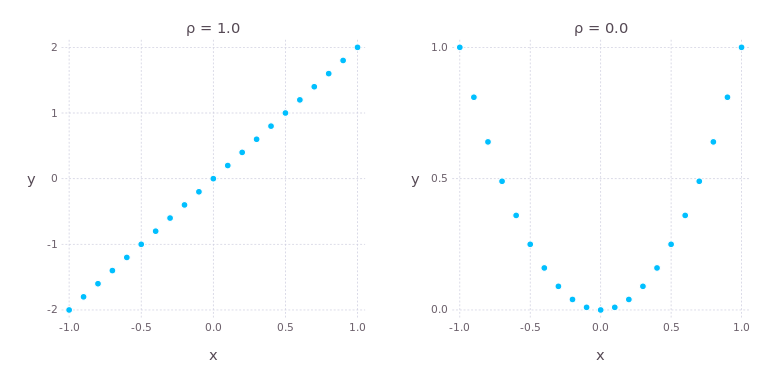
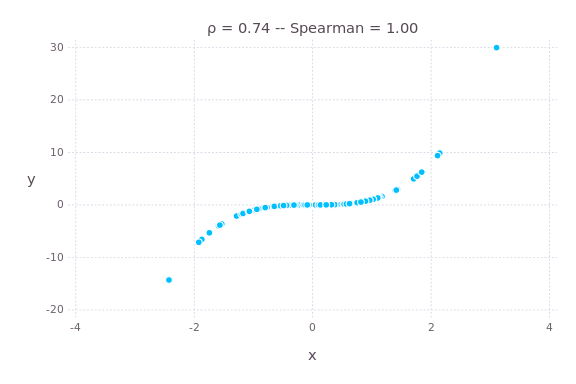
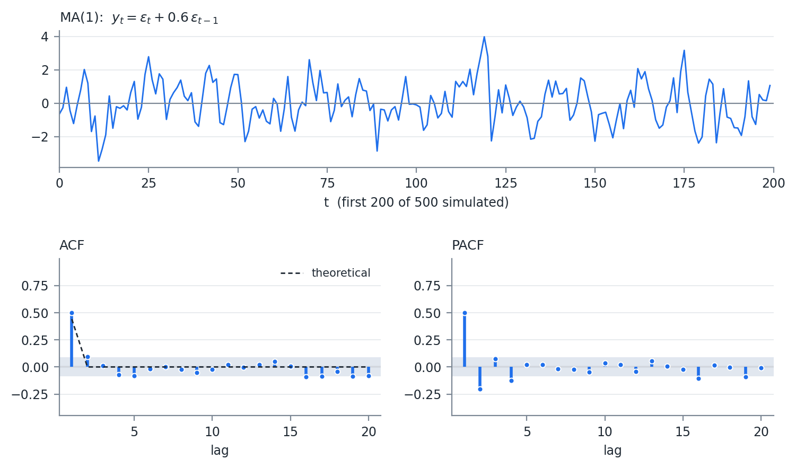
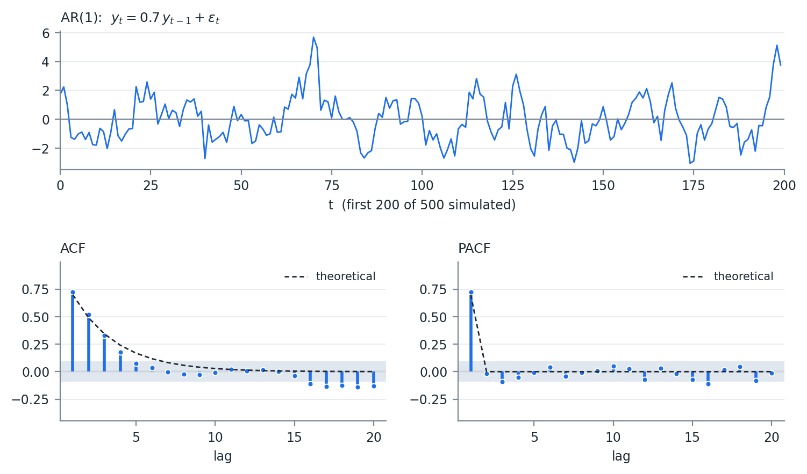

FinTech 545 — Week 02
Week 01 handled one variable at a time. A portfolio is never one variable.
For Z = Ax + By + c:
\sigma_z^2 = A^2 \sigma_x^2 + B^2 \sigma_y^2 + 2AB\, \operatorname{cov}(x,y)
The first two terms are Week 01. The third term is this week.
The expected value of the product of the deviations from the means:
\operatorname{cov}(x,y) = E\left[ \left( x - \mu_x \right)\left( y - \mu_y \right) \right]
Estimated the same way as the variance:
\operatorname{cov}(x,y) = \frac{1}{n-1} \sum_{i=1}^{n} \left( x_i - \bar{x} \right)\left( y_i - \bar{y} \right)
The n-1 is the same degrees of freedom argument as the sample variance. Two means were estimated, but they cost one degree of freedom between them.
\operatorname{var}\left( \sum_i^n a_i X_i \right) = \sum_i^n \sum_j^n a_i a_j \operatorname{cov}\left( X_i, X_j \right)
A portfolio is \sum a_i X_i, so the variance of any portfolio is a double sum over the covariance matrix.
Every risk number in this course is a version of that expression.
Covariance has no natural scale. Doubling the units of x doubles the covariance.
Two covariances cannot be compared directly. Correlation fixes that.
| Pearson | Spearman | |
|---|---|---|
| Measures | Linear association | Monotonic association |
| Computed on | Values | Ranks |
| Outlier sensitivity | High | Low |
| Equals \pm 1 when | Points lie on a line | Points are monotone |
Which one is right depends on what the number is for. In this course it usually builds a covariance matrix, which means Pearson.
The covariance scaled into [-1,1]:
\rho_{i,j} = \frac{\operatorname{cov}\left( X_i, X_j \right)}{\sigma_i \sigma_j}
99% of the time someone says “correlation,” they mean this.

Pearson correlation of 1.0 and 0.0. The right panel is y = x^2
y is a deterministic function of x. There is no randomness at all. Pearson reports zero.
A correlation of zero means no linear relationship.
It does not mean no relationship, and it does not mean independence.
The converse does hold for the multivariate normal, which is one of the reasons that distribution is used so heavily.
Pearson, computed on the ranks:
r_s = \rho_{R(x),R(y)} = \frac{\operatorname{cov}(R(x),R(y))}{\sigma_{R(x)} \sigma_{R(y)}}
Because it uses ranks, it measures monotonicity. Nothing more than that.
| Value | Order | Rank |
|---|---|---|
| 1.2 | 5 | 5 |
| 0.8 | 2 | 3 |
| 1.3 | 6 | 6 |
| 0.8 | 3 | 3 |
| 0.8 | 4 | 3 |
| 0.5 | 1 | 1 |
Ties take the average of their orders. The three tied values hold orders 2, 3, and 4, so each receives a rank of 3.

y=x^{3}: Pearson is 0.74, Spearman is 1.00
Perfectly monotone, so Spearman is 1. Perfect but not straight, so Pearson is 0.74.
Both figures show a deterministic relationship. The two measures disagree in both cases.
Neither measure is wrong. They answer different questions.
Spearman returns in Week 05, where a copula separates dependence from the marginals and rank correlation is the natural way to describe what is left.
X \sim N(\mu, \Sigma)
\Sigma_{i,j} = \operatorname{cov}\left( X_i, X_j \right)
\operatorname{var}(w'X) = w' \Sigma w. Fact 7, in matrix form.
Positive semi-definite:
w' \Sigma w \geq 0\ \ \forall\ w \in \mathbb{R}^n
Every covariance matrix is PSD. Not an assumption we impose – w'\Sigma w is the variance of the portfolio w'X, and a variance cannot be negative.
Equivalently, every eigenvalue is at least 0.
The same statement with a strict inequality:
w' \Sigma w > 0\ \ \forall\ w \neq 0
Every eigenvalue is strictly greater than 0.
A portfolio with exactly zero variance.
If w'\Sigma w = 0 for some w \neq 0, then one variable is an exact linear combination of the others.
\Sigma is then singular: at least one zero eigenvalue, |\Sigma| = 0, and \Sigma^{-1} does not exist.
A matrix with w'\Sigma w < 0 for some w assigns a negative variance to a real portfolio.
That is not a rounding problem. It is a covariance matrix that cannot have come from any data.
Week 03 covers what to do when the matrix we are handed fails this test.
f(X) = \frac{e^{-\frac{1}{2}(X - \mu)' \Sigma^{-1} (X - \mu)}}{\sqrt{(2\pi)^k |\Sigma|}}
The exponent is the multivariate version of \left( \frac{x-\mu}{\sigma} \right)^2 from Week 01. \Sigma^{-1} does the work that division by \sigma^2 did in one dimension.
Both \Sigma^{-1} and |\Sigma| appear. In the PSD but not PD case |\Sigma| = 0, so the denominator is zero and the inverse does not exist.
There is nothing to work around. The distribution genuinely has no density in n dimensions, because all of its mass sits on a lower dimensional subspace.
A sample covariance matrix estimated from fewer observations than variables is always singular. That is the starting point for Week 09.
If X \sim N(\mu, \Sigma), there exists L such that
X = LZ + \mu, \qquad Z_i \sim N(0,1), \qquad \Sigma = LL'
The multivariate version of X = \mu + \sigma Z, with L standing in for \sigma.
Week 03 is largely about finding L. The factorization exists in theory and the algorithm fails in practice more often than you would expect.
\mathbf{x} = \begin{bmatrix}\mathbf{x}_{1}\\ \mathbf{x}_{2}\end{bmatrix} \qquad \boldsymbol{\mu} = \begin{bmatrix}\boldsymbol{\mu}_{1}\\ \boldsymbol{\mu}_{2}\end{bmatrix} \qquad \boldsymbol{\Sigma} = \begin{bmatrix}\boldsymbol{\Sigma}_{11} & \boldsymbol{\Sigma}_{12}\\ \boldsymbol{\Sigma}_{21} & \boldsymbol{\Sigma}_{22}\end{bmatrix}
with x_1 of size q \times 1 and x_2 of size (N-q) \times 1.
Given X_2 = a, then X_1 \sim N(\bar{\mu}, \bar{\Sigma}) where
\bar{\mu} = \mu_1 + \Sigma_{12} \Sigma_{22}^{-1} \left( a - \mu_2 \right)
\bar{\Sigma} = \Sigma_{11} - \Sigma_{12} \Sigma_{22}^{-1} \Sigma_{21}
The conditional variance does not depend on a. Learning X_2 reduces the uncertainty in X_1 by the same amount regardless of what value showed up.
\Sigma_{12}\Sigma_{22}^{-1}\Sigma_{21} is PSD, so conditioning never increases variance.
\bar{\mu} is a regression. \Sigma_{12}\Sigma_{22}^{-1} is the coefficient matrix from regressing X_1 on X_2, and the next section derives the same quantity from a completely different starting point.
Assumptions 4 and 5 mean the error term is iid
Assumption 7 can be broken. If assumed, hypothesis testing and confidence and prediction intervals become available.
Assume 7 and 4, and allow an intercept, and assumption 2 follows naturally. All expected value after the regressors is carried in the intercept.
Both relaxations are the same idea: model the structure OLS assumed away, then apply OLS to what is left.
X = [\,\mathbf{1}\ \ X\,], \qquad Y = X\beta
The system is overdetermined and likely has no solution. We approximate:
Y = X\hat{\beta} + \epsilon, \qquad \epsilon = Y - X\hat{\beta}
\text{minimize } S(\hat{\beta}) = \epsilon' \epsilon
The sum of the squares of the errors.
Y = X\beta
Multiply each side by (X'X)^{-1}X':
(X'X)^{-1}X'Y = (X'X)^{-1}X'X\beta = I_{m+1}\, \beta
\hat{\beta} = (X'X)^{-1}X'Y
In the single regressor case:
\hat{\beta_i} = \frac{\operatorname{cov}\left( x_i, y \right)}{\sigma_{x(i)}^2} = \frac{\sigma_y \rho_{x(i),y}}{\sigma_{x(i)}}
The same object that appeared as \Sigma_{12}\Sigma_{22}^{-1} when we conditioned the normal.
A regression coefficient is a scaled covariance, whether it arrives from a minimization problem or from conditioning a normal vector.
Let p = m + 1.
s^2 = \frac{\epsilon' \epsilon}{n - p}, \qquad \operatorname{var}\left( \hat{\beta}\ |\ X \right) = \sigma^2 (X'X)^{-1}
\text{s.e. } \hat{\beta} = s \sqrt{\operatorname{diag}\left( (X'X)^{-1} \right)}
The n - p is the same degrees of freedom argument as the n-1 in the sample variance, generalized. We estimated p parameters, so p degrees of freedom are gone.
X'X is a Gram matrix, so it is PSD:
v'X'Xv = (Xv)'(Xv) = \|Xv\|^2 \geq 0
Assumption 6 is what makes it PD rather than merely PSD. If the columns are linearly dependent, some v \neq 0 gives Xv = 0, so X'X is singular and (X'X)^{-1} does not exist.
The same failure as a covariance matrix losing rank, arriving through a different door.
Measure it with the smallest eigenvalue of X'X. As it tends to 0, the linear dependence is increasing.
Perfect dependence is the easy case. The matrix is singular, the software fails, and you go look for the problem.
Near dependence is the dangerous one. The regression runs and reports a respectable R^2, while the coefficients come back large, unstable, occasionally carrying the wrong sign, and dropping a single observation moves them.
The Durbin Watson statistic measures serial correlation in the residuals, which is assumption 4.
Durbin Watson tests the first lag only, so a series correlated at longer lags can pass it.
OLS minimizes a sum of squares and asks nothing about the distribution of the errors.
MLE starts from an assumed distribution and asks which parameters make the observed data most probable.
The two agree under normality and part company as soon as we leave it, which is most of this course.
The product of the PDF values:
l = \prod_{i=1}^{n} f(Y\ |\ X;\ \beta)
A thousand observations at a density of 0.3 gives
0.3^{1000} \approx 10^{-523}
below the smallest number a 64 bit float can represent. The product underflows to exactly zero and the optimizer has nothing to work with.
ll = \sum_{i=1}^{n} \ln \left( f(Y|X;\beta) \right)
The log is monotone, so the maximizing parameters are unchanged. Each observation now contributes \ln(0.3) = -1.2.
l = \prod_{i=1}^{n} \frac{1}{\sigma\sqrt{2\pi}} e^{-\frac{1}{2}\left( \frac{x_i - \mu}{\sigma} \right)^2}
ll = -\frac{n}{2}\ln\left( \sigma^2 2\pi \right) - \frac{1}{2\sigma^2}\sum_{i=1}^{n}\left( x_i - \mu \right)^2
\hat{\mu} = \frac{1}{n}\sum_{i=1}^{n} x_i \qquad\qquad \widehat{\sigma^2} = \frac{1}{n}\sum_{i=1}^{n}(x_i - \mu)^2
The MLE for the variance divides by n, not n-1. It is not unbiased.
Maximum likelihood does not promise unbiasedness. It promises consistency and, asymptotically, the smallest variance of any consistent estimator.
Fit the likelihood to the error term, with mean set to 0:
\epsilon = Y - X\hat{\beta}
ll = -\frac{n}{2}\ln\left( \sigma^2 2\pi \right) - \frac{1}{2\sigma^2}\sum_{i=1}^{n} \epsilon_i^2
The only term involving \beta is \sum \epsilon_i^2, and it carries a negative sign. Maximizing over \beta is minimizing the sum of squared errors.
OLS, written backwards.
The normal density can be replaced.
Fit the same regression with a t distributed error and OLS has nothing to say. The likelihood construction needs only a different f.
Week 05 does exactly that.
SS_{total} = \sum_{i=1}^{n} \left( y_i - \bar{y} \right)^2, \qquad SS_{error} = \sum_{i=1}^{n} \epsilon_i^2
R^2 = \frac{SS_{model}}{SS_{total}} = 1 - \frac{SS_{error}}{SS_{total}}
As variables are added, R^2 continuously increases, regardless of whether they explain anything.
Once X is square the system can have a singular solution and \operatorname{var}(\epsilon) = 0.
An R^2 of 1.0 obtained that way describes the sample perfectly and forecasts nothing, because the extra columns fit the noise in this particular sample.
Adding a column of random numbers to any regression raises the R^2.
\text{Adj } R^2 = 1 - (1 - R^2)\frac{n-1}{n-p-1}
The penalty grows with p and shrinks with n, so a variable has to earn its place by more than the fit it buys mechanically.
Adjusted R^2 can decrease when a variable is added, and can be negative.
AIC = 2k - 2\ln(\hat{L})
AICc = AIC + \frac{2k^2 + 2k}{n - k - 1}
BIC = k \ln(n) - 2\ln(\hat{L})
AICc is the small sample correction. Without it, AIC tends to select models with too many parameters, in the same way R^2 does.
k = p + d
d is the number of additional parameters fit for the distribution.
With q slope parameters, p = q + 1 for the intercept. Using the normal, the fitted variance gives d = 1, so k = p + 1.
Lower is better for both. The difference is the size of the penalty.
BIC selects smaller models, and the gap widens as the sample grows.
The absolute value means nothing. Only differences between models fit to the same data are interpretable.
E(\epsilon_i \epsilon_j) = 0\ \ \forall\ i \neq j
When this breaks, the beta values are still consistent. The standard errors are not.
Serially correlated errors mean the sample carries less independent information than its length suggests.
The reported standard errors come in too small, the t-statistics come in too large, and variables look significant when they are not.
Time series models are built to get back to the regression assumptions for the errors.
Autocovariance is the covariance across time periods:
\gamma(n) = \operatorname{cov}(y_t, y_{t-n}), \qquad \rho(n) = \frac{\gamma(n)}{\sigma_t \sigma_{t-n}}
The PACF is the residual autocorrelation left when n-1 lags have been accounted for. The autocorrelation of the residual of the series regressed on the n-1 lags.
| Process | ACF | PACF |
|---|---|---|
| MA(q) | Cuts off after lag q | Decays |
| AR(p) | Decays | Cuts off after lag p |
| ARMA(p,q) | Decays | Decays |
Both functions are reported together because either one alone is ambiguous.
The two derivations that follow produce the top two rows.
The variable is a function of past error terms. MA(1):
y_t = \mu + \epsilon_t + \theta \epsilon_{t-1}
Innovations have a 2 period impact.
E(y_t) = \mu
\operatorname{var}(y_t) = \operatorname{var}(\epsilon_t) + \theta^2 \operatorname{var}(\epsilon_{t-1}) + 2\theta \operatorname{cov}(\epsilon_t, \epsilon_{t-1})
\operatorname{var}(y_t) = (1 + \theta^2)\sigma^2
The variance of the series differs from the variance of the errors. The covariance term dropped out because the errors are iid by assumption, which is the assumption we are trying to preserve.
\gamma(1) = \theta \sigma^2, \qquad \gamma(k) = 0\ \ \forall\ k > 1
\rho(1) = \frac{\theta}{1 + \theta^2}, \qquad \rho(k) = 0\ \ \forall\ k > 1
The first row of the identification table. An MA(1) has exactly one non-zero autocorrelation, and it is bounded by 0.5 in absolute value for any \theta.
Back substituting repeatedly:
\epsilon_t = \hat{y_t} + \sum_{i=1}^{\infty} (-\theta)^i\, \hat{y_{t-i}}
For y to be defined, |\theta| < 1.
That condition makes the weights (-\theta)^i decline rather than explode. It is called invertibility.

Simulated MA(1) with \theta = 0.6
One significant ACF spike at \theta/(1+\theta^2) = 0.44, and a PACF that decays with alternating sign. The band is \pm 1.96/\sqrt{n}.
The variable is a function of its own lags. AR(1), centered on 0:
\hat{y_t} = \beta \hat{y_{t-1}} + \epsilon_t
Back substitute:
\hat{y_t} = \sum_{i=0}^{\infty} \beta^i \epsilon_{t-i}
A special case of an infinite moving average. The weights are not constant – they decline geometrically.
\operatorname{var}(y_t) = \sigma^2 \sum_{i=0}^{\infty} \beta^{2i} = \frac{\sigma^2}{1 - \beta^2}
If |\beta| = 1 the variance is infinite. Greater than 1 and it is undefined, since a variance cannot be negative.
With an intercept c:
\mu = E(c) + \beta\mu \Rightarrow \mu = \frac{c}{1-\beta}
\gamma(k) = \beta \gamma(k-1) = \frac{\sigma^2 \beta^k}{1 - \beta^2}, \qquad \rho(k) = \beta^k
\beta determines the persistence. Near 0 decays quickly; near 1 persists long into the future. Beta of 1 is a random walk.
\rho(k) = \beta^k decays but never reaches zero. The PACF is the mirror image: once the first lag is accounted for, nothing is left.

Simulated AR(1) with \beta = 0.7
The ACF and PACF panels have traded places against the MA(1). The identification table, drawn twice.
Persistence in returns is what momentum is.
\rho(k) = \beta^k with \beta > 0 says a positive move makes the next move more likely to be positive, decaying geometrically. That is the effect a momentum factor is built to capture.
My opinion: in risk work, the marginal value of moving past ARMA(1,1) on return data is small, and the higher order fits look like overfitting rather than signal. The autocorrelation in returns is real but small. The variance is where the structure is.
ll = -\frac{1}{2}\left( n \ln(2\pi) + \ln\left| \Gamma(\theta,\beta) \right| + X' \Gamma(\theta,\beta)^{-1} X \right)
where X = Y - \mu and \Gamma is the (n \times n) autocovariance matrix implied by the parameters.
The multivariate normal density, with the model supplying the covariance matrix instead of an estimate.
Do not implement it. Use the fitting routine in your statistics package.
If the variance of the error term changes over time, OLS assumption 5 is broken.
Return data breaks assumption 5 far more visibly than assumption 4.
Large moves cluster. A 3% day is followed by another large day considerably more often than a quiet day is, and the effect persists for weeks.
The pattern lives in the squared returns rather than in the returns themselves.
An ACF of returns looks like noise. An ACF of squared returns does not.
Apply the ARMA framework to the variance of the error term:
\epsilon_t = \sigma_t z_t \quad \text{where } z \sim N(0,1)\ iid
\sigma_t^2 = \omega + \sum_{i=1}^{p} \alpha_i \epsilon_{t-i}^2 + \sum_{i=1}^{q} \beta_i \sigma_{t-i}^2
The \alpha terms are the ARCH part, carrying the effect of a recent large move. The \beta terms carry the persistence of the variance level itself.
Take the expectation of both sides of the GARCH(1,1):
\sigma^2 = \omega + \alpha \sigma^2 + \beta \sigma^2 = \frac{\omega}{1 - \alpha - \beta}
This bounds the parameters: \alpha < 1, \beta < 1, and \alpha + \beta < 1.
Not a technicality. If \alpha + \beta \geq 1 the expression is negative or undefined, and the model has no long run variance to revert to.
Fitted values on daily equity data typically land between 0.95 and 0.99, close enough to the boundary that the estimated long run variance is unstable.
E\left( \sigma_{t+k}^2 \right) = \sigma^2 + (\alpha + \beta)^{k-1}\left( \sigma_{t+1}^2 - \sigma^2 \right)
The forecast decays from the current variance toward the long run level at rate \alpha + \beta.
The parameter that made the long run variance unstable is the same one that sets how long a shock stays in the forecast. At \alpha + \beta = 0.97 the half life is roughly 23 days, which is why a volatility spike takes about a month to work out.
Set \omega = 0 and \alpha + \beta = 1.
The long run variance disappears entirely and what is left is an exponentially weighted average of squared returns.
That is the RiskMetrics estimator. Week 03 covers it directly.
Fit by maximum likelihood. The likelihood is the normal density evaluated at \epsilon_t / \sigma_t, with \sigma_t generated recursively from the parameters being fit.
Use your statistics package: